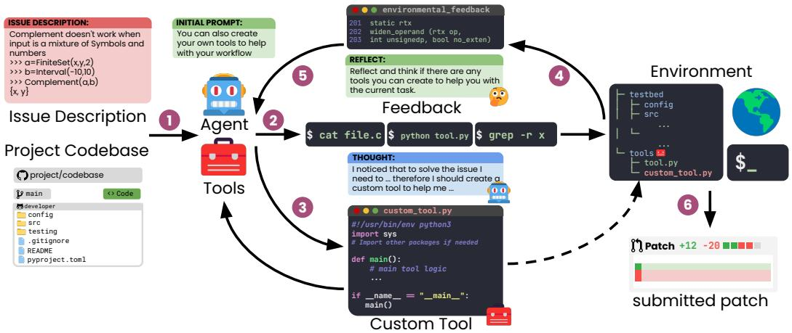
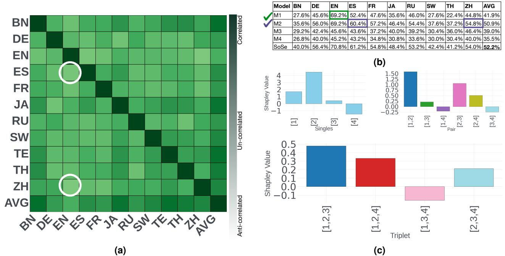
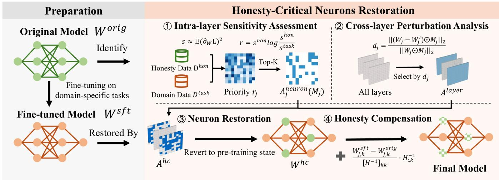
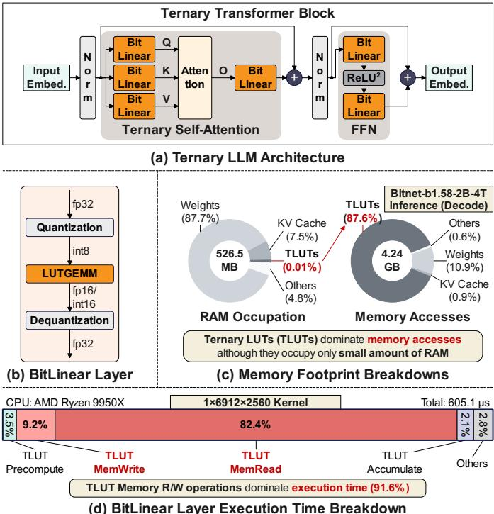

微观深度解读
为您精选了 6 篇高质量 AI 论文的深度解析
#1
软件工程代理
自主演化
动态创建
适应性
复杂软件问题
简介：本文提出了Live-SWE-agent，一种能够在运行时自主演化的软件工程代理。该方法解决了传统软件代理在设计和适应性上的局限性，通过动态创建和修改工具，显著提高了解决复杂软件问题的能力，达到75.4%的解决率，超越现有开源代理，展示了在线自我演化的有效性。

#2
类别专家组合
大型语言模型
非均匀加权平均
模型训练资源
性能优化
简介：本文提出了“类别专家组合”（SoCE）框架，通过识别不同任务类别的“专家”模型并采用非均匀加权平均，优化大型语言模型（LLMs）的性能。SoCE有效解决了模型训练资源消耗高、性能不一致和过拟合等问题，实验证明其在多项基准测试中达到了最先进的性能，增强了模型的稳健性和一致性。

#3
强化学习
物理问题推理
大语言模型
科学推理
国际物理奥林匹克
简介：本文提出了P1系列大语言模型，通过构建高质量物理问题数据集和采用多阶段强化学习，显著提升了模型在复杂物理问题上的推理能力。P1-235B-A22B成为首个在国际物理奥林匹克中获得金牌的开源模型，展示了其在科学推理领域的突破性进展。

#4
自我演化
网页代理
跨会话记忆
持久记忆
动态网页环境
简介：本文提出了WebCoach，一个自我演化的框架，旨在解决网页代理在复杂任务中缺乏跨会话记忆的问题。WebCoach通过三个组件（WebCondenser、外部记忆存储和教练）实现持久记忆，支持代理从历史经验中学习，显著提高任务成功率和执行效率。实验结果显示，WebCoach在多个LLM模型上均有效提升了代理性能，展示了其在动态网页环境中的应用潜力。

#5
大语言模型
诚实性关键神经元恢复
监督微调
Hessian引导
参数效率
简介：本文提出了一种名为“诚实性关键神经元恢复”（HCNR）的方法，旨在解决大语言模型（LLM）在监督微调后诚实性下降的问题。HCNR通过识别并恢复对诚实性至关重要的神经元，同时应用Hessian引导的补偿机制，显著提高模型的诚实性，恢复率达33.25%，且在数据使用和速度上均优于传统方法。

#6
三元大语言模型
LLM推理
SIMD寄存器
GEMM操作
能效优化
简介：本文提出了T-SAR框架，解决了边缘设备上三元大语言模型（LLM）推理中的计算和内存瓶颈问题。通过在CPU的SIMD寄存器内动态生成查找表，T-SAR显著提高了GEMM和GEMV操作的性能，分别实现了5.6-24.5倍和1.1-86.2倍的速度提升，同时保持低功耗和硬件开销，展现出优于现有解决方案的能效。
